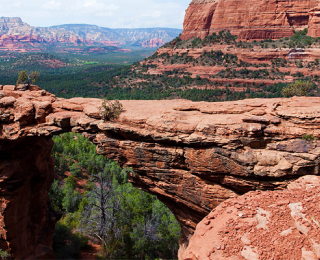

Добро пожаловать в Седону

седона небольшой городок в Аризоне
СЕДОНА — небольшой городок в АРИЗОНЕ, зАСЛУЖИвающий большего!
Рассмотрим 5 причин, по которым Седона круче, чем гранд каньон!
Преимущества Седоны
настоящий городок
— №1 — СЕДОНА НЕ АТТРАКЦИОН ДЛЯ ТУРИСТОВ, ТАМ ТЕЧЕТ СВОЯ ЖИЗНЬ
ТАМ ЕСТЬ Мост дьявола
— №2 — Да, по нему можно пройти! Если вы осмелитесь, конечно Небольшая площадь
— №3 — ВСЕ интересные места находятся очень близкокрасивая дорога
— №4 — ЕХАТЬ В СЕДОНУ ИЗ ЛАС-ВЕГАСА совсем НЕ СКУЧНО!мало туристов
— №5 — Большинство едет в гранд каньон и толпится та
Найти гостиницу
Заинтересовались?
Укажите предполагаемые датыпоездки, и мы покажем вам лучшиепредложения гостиниц в седоне
Найти гостиницуКарта